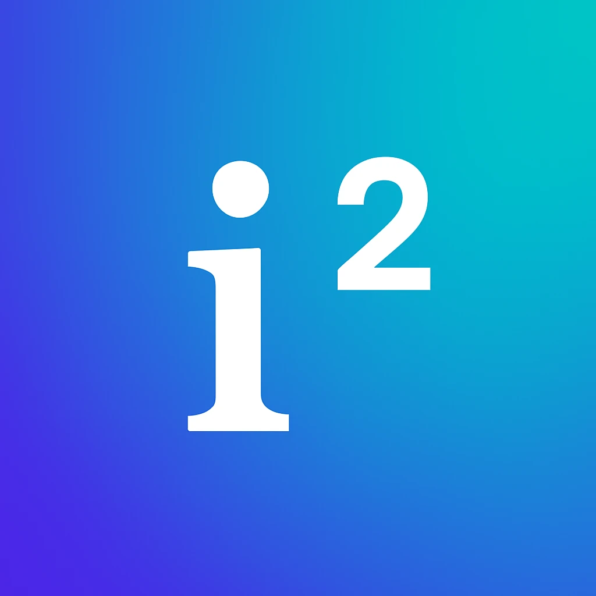

<!doctype html>
<html lang="de">
<head>
<meta charset="utf-8">
<title>UniMathe Stilrahmen</title>
<link rel="stylesheet" href="https://cdn.jsdelivr.net/npm/katex@0.16.11/dist/katex.min.css">
<script src="https://cdn.jsdelivr.net/npm/katex@0.16.11/dist/katex.min.js"></script>
<link href="https://fonts.googleapis.com/css2?family=Inter+Tight:wght@500;600;700;800&family=Inter:wght@400;500;600&family=JetBrains+Mono:wght@400;500;600&display=block" rel="stylesheet">
<style>
  :root {
    --bg: #07081A;
    --indigo: #4B2BE6;
    --blue: #1E8BDB;
    --cyan: #00C8C8;
    --vec: #A6ADD3;
    --eig: #FFC247;
    --lam: #FF7A5C;
    --txt: #F3F4FB;
    --txt2: #7E84AD;
    --hair: rgba(243, 244, 251, .14);
  }
  * { box-sizing: border-box; }
  body {
    margin: 0; width: 2600px; height: 2080px; overflow: hidden;
    background: #03040C; color: var(--txt);
    font-family: Inter, sans-serif; -webkit-font-smoothing: antialiased;
  }
  .abs { position: absolute; }
  .frame {
    position: absolute; width: 1080px; height: 1920px; overflow: hidden;
    background: var(--bg); transform-origin: 0 0;
    box-shadow: 0 0 0 1px rgba(255,255,255,.06);
  }
  .frame svg.stage { position: absolute; inset: 0; }
  .frame .abs { text-shadow: 0 0 10px #07081A, 0 0 22px #07081A; }
  .mono {
    font-family: "JetBrains Mono", monospace; text-transform: uppercase;
    letter-spacing: .08em; font-weight: 500;
  }
  .h1 {
    font-family: "Inter Tight", sans-serif; font-weight: 800;
    font-size: 108px; line-height: .98; letter-spacing: -.035em;
  }
  .katex { font-size: 1em; }
  .nocase { text-transform: none !important; letter-spacing: .02em; }
  .grain { position: absolute; inset: 0; mix-blend-mode: overlay; opacity: .55; pointer-events: none; }
  .vignette {
    position: absolute; inset: 0; pointer-events: none;
    background: radial-gradient(ellipse 80% 65% at 50% 48%, transparent 55%, rgba(0,0,0,.6) 100%);
  }
  /* board */
  .label { font-size: 22px; color: var(--txt2); }
  .cap { font-size: 17px; color: var(--txt2); margin-top: 10px; line-height: 1.5; }
  .colhead { font-size: 22px; color: var(--txt); padding-bottom: 14px; border-bottom: 1px solid var(--hair); margin-bottom: 26px; }
  .sw { display: flex; gap: 18px; align-items: center; margin-bottom: 22px; }
  .sw .chip { width: 72px; height: 72px; border-radius: 6px; flex: none; box-shadow: inset 0 0 0 1px rgba(255,255,255,.12); }
  .sw .name { font-family: "Inter Tight"; font-weight: 700; font-size: 26px; }
  .sw .meta { font-size: 16px; color: var(--txt2); margin-top: 4px; }
</style>
</head>
<body>
<div id="board"></div>
<script>
const C = {
  bg: '#07081A', indigo: '#4B2BE6', blue: '#1E8BDB', cyan: '#00C8C8',
  vec: '#A6ADD3', eig: '#FFC247', lam: '#FF7A5C', txt: '#F3F4FB', txt2: '#7E84AD'
};
// Beispielmatrix: A = [[2,1],[1,2]], Eigenvektor v = (1,1) mit λ = 3 (zweiter: (1,-1) mit λ = 1)
const A = [[2, 1], [1, 2]];
const mul = (M, p) => [M[0][0] * p[0] + M[0][1] * p[1], M[1][0] * p[0] + M[1][1] * p[1]];
const lerpM = (t) => [[1 + t * (A[0][0] - 1), t * A[0][1]], [t * A[1][0], 1 + t * (A[1][1] - 1)]];
const tex = (s, opts = {}) => katex.renderToString(s, { throwOnError: true, trust: true, strict: false, ...opts });
const col = (hex, s) => `\\textcolor{${hex}}{${s}}`;
const FORMULA = `\\htmlId{fA}{${col(C.cyan, 'A')}}\\,\\htmlId{fv1}{${col(C.eig, '\\mathbf{v}')}} = \\htmlId{fl}{${col(C.lam, '\\lambda')}}\\,\\htmlId{fv2}{${col(C.eig, '\\mathbf{v}')}}`;

let uid = 0;

function makeFrame({ x, y, scale = 1, ox, oy, u, M, mask = [540, 1000, 760], gridAlpha = 1 }) {
  const id = 'f' + (uid++);
  const el = document.createElement('div');
  el.className = 'frame';
  el.style.left = x + 'px'; el.style.top = y + 'px';
  el.style.transform = `scale(${scale})`;
  const S = (p) => [ox + u * p[0], oy - u * p[1]];
  const svg = [];
  svg.push(`<svg class="stage" width="1080" height="1920" viewBox="0 0 1080 1920" xmlns="http://www.w3.org/2000/svg">
  <defs>
    <radialGradient id="${id}glow" cx="${mask[0]}" cy="${mask[1]}" r="900" gradientUnits="userSpaceOnUse">
      <stop offset="0" stop-color="${C.indigo}" stop-opacity=".30"/>
      <stop offset=".55" stop-color="${C.indigo}" stop-opacity=".06"/>
      <stop offset="1" stop-color="${C.indigo}" stop-opacity="0"/>
    </radialGradient>
    <linearGradient id="${id}space" x1="0" y1="1920" x2="1080" y2="0" gradientUnits="userSpaceOnUse">
      <stop offset="0" stop-color="${C.indigo}"/><stop offset=".5" stop-color="${C.blue}"/><stop offset="1" stop-color="${C.cyan}"/>
    </linearGradient>
    <radialGradient id="${id}mg" cx="${mask[0]}" cy="${mask[1]}" r="${mask[2]}" gradientUnits="userSpaceOnUse">
      <stop offset="0" stop-color="#fff"/><stop offset=".6" stop-color="#fff" stop-opacity=".7"/><stop offset="1" stop-color="#fff" stop-opacity="0"/>
    </radialGradient>
    <mask id="${id}m"><rect width="1080" height="1920" fill="url(#${id}mg)"/></mask>
    <filter id="${id}blur" x="-50%" y="-50%" width="200%" height="200%"><feGaussianBlur stdDeviation="9"/></filter>
    <filter id="${id}noise"><feTurbulence type="fractalNoise" baseFrequency=".85" numOctaves="2" stitchTiles="stitch"/><feColorMatrix type="saturate" values="0"/></filter>
  </defs>
  <rect width="1080" height="1920" fill="url(#${id}glow)"/>`);

  // Gitter: Original (Geist) + transformiert
  const grid = (G, stroke, w, axisW, alpha, axisAlpha, N = 14) => {
    let s = '';
    for (let k = -N; k <= N; k++) {
      for (const [a, b] of [[[k, -N], [k, N]], [[-N, k], [N, k]]]) {
        const [x1, y1] = S(mul(G, a)), [x2, y2] = S(mul(G, b));
        const ax = k === 0;
        s += `<line x1="${x1}" y1="${y1}" x2="${x2}" y2="${y2}" stroke="${stroke}" stroke-width="${ax ? axisW : w}" stroke-opacity="${ax ? axisAlpha : alpha}"/>`;
      }
    }
    return s;
  };
  svg.push(`<g mask="url(#${id}m)">`);
  svg.push(grid([[1, 0], [0, 1]], '#ffffff', 1, 1.5, .05 * gridAlpha, .12 * gridAlpha));
  if (M) svg.push(grid(M, `url(#${id}space)`, 1.6, 3, .55 * gridAlpha, .95 * gridAlpha));
  svg.push(`</g>`);

  el._svg = svg; el._S = S; el._id = id; el._u = u; el._ox = ox; el._oy = oy;
  el._html = [];
  return el;
}

function arrow(el, p0, p1, color, { w = 7, head = 30, opacity = 1, dash = null, glow = false } = {}) {
  const [x1, y1] = el._S(p0), [x2, y2] = el._S(p1);
  const dx = x2 - x1, dy = y2 - y1, L = Math.hypot(dx, dy), ux = dx / L, uy = dy / L;
  const bx = x2 - ux * head, by = y2 - uy * head, hw = head * .52, px = -uy, py = ux;
  const ex = x2 - ux * head * .7, ey = y2 - uy * head * .7;
  const body = (extra) => `<line x1="${x1}" y1="${y1}" x2="${ex}" y2="${ey}" stroke="${color}" stroke-width="${w}" stroke-linecap="round" ${dash ? `stroke-dasharray="${dash}"` : ''} ${extra}/>` +
    (dash ? `<polygon points="${x2},${y2} ${bx + px * hw},${by + py * hw} ${bx - px * hw},${by - py * hw}" fill="none" stroke="${color}" stroke-width="3" stroke-linejoin="round" ${extra}/>`
          : `<polygon points="${x2},${y2} ${bx + px * hw},${by + py * hw} ${bx - px * hw},${by - py * hw}" fill="${color}" stroke="${color}" stroke-width="2" stroke-linejoin="round" ${extra}/>`);
  if (glow) el._svg.push(`<g filter="url(#${el._id}blur)" opacity=".75">${body('')}</g>`);
  el._svg.push(`<g opacity="${opacity}">${body('')}</g>`);
}

function line(el, p0, p1, color, { w = 2, opacity = 1, dash = null } = {}) {
  const [x1, y1] = el._S(p0), [x2, y2] = el._S(p1);
  el._svg.push(`<line x1="${x1}" y1="${y1}" x2="${x2}" y2="${y2}" stroke="${color}" stroke-width="${w}" stroke-opacity="${opacity}" ${dash ? `stroke-dasharray="${dash}"` : ''} stroke-linecap="round"/>`);
}

function arc(el, r, a0, a1, color, opacity = .9) {
  // Winkel mathematisch (gegen Uhrzeigersinn, Grad); Bildschirm-y ist gespiegelt
  const P = (a) => el._S([r * Math.cos(a * Math.PI / 180) / el._u, r * Math.sin(a * Math.PI / 180) / el._u]);
  const [x0, y0] = P(a0), [x1, y1] = P(a1);
  const sweep = a1 > a0 ? 0 : 1;
  el._svg.push(`<path d="M${x0},${y0} A${r},${r} 0 0 ${sweep} ${x1},${y1}" fill="none" stroke="${color}" stroke-width="3" stroke-opacity="${opacity}" stroke-linecap="round"/>`);
  // Pfeilspitze am Bogenende
  const t = (a1 + (a1 > a0 ? -1 : 1) * 0.01) * Math.PI / 180;
  const dir = a1 > a0 ? 1 : -1;
  const tx = -Math.sin(a1 * Math.PI / 180) * dir, ty = -Math.cos(a1 * Math.PI / 180) * dir; // Tangente in Bildschirmkoordinaten
  const h = 14, nx = -ty, ny = tx;
  el._svg.push(`<polygon points="${x1 + tx * h * .6},${y1 + ty * h * .6} ${x1 - tx * h * .6 + nx * h * .55},${y1 - ty * h * .6 + ny * h * .55} ${x1 - tx * h * .6 - nx * h * .55},${y1 - ty * h * .6 - ny * h * .55}" fill="${color}" fill-opacity="${opacity}"/>`);
}

function html(el, x, y, inner, style = '') {
  el._html.push(`<div class="abs" style="left:${x}px;top:${y}px;${style}">${inner}</div>`);
}

function finish(el, parent) {
  el._svg.push(`</svg>`);
  el.innerHTML = el._svg.join('') + el._html.join('') +
    `<svg class="grain" width="1080" height="1920"><rect width="1080" height="1920" filter="url(#${el._id}noise)" opacity=".5"/></svg><div class="vignette"></div>`;
  parent.appendChild(el);
  return el;
}

// Swiss-Elemente: Kopfzeile mit Index, Haarlinie mit Registermarken
function swissHead(el, index, label) {
  html(el, 72, 236, `<div class="mono" style="font-size:24px;color:${C.txt2};display:flex;gap:18px;align-items:center">
    <span style="color:${C.txt}">${index}</span><span style="width:44px;height:3px;background:${C.eig};display:inline-block"></span><span>${label}</span></div>`);
}
function hairline(el, y) {
  el._svg.push(`<line x1="72" y1="${y}" x2="1008" y2="${y}" stroke="#fff" stroke-opacity=".16" stroke-width="1"/>`);
  for (const x of [72, 1008]) el._svg.push(`<line x1="${x}" y1="${y - 10}" x2="${x}" y2="${y + 10}" stroke="#fff" stroke-opacity=".4" stroke-width="1.5"/>`);
}

const board = document.getElementById('board');

/* ---------------- HERO: Aha-Moment ---------------- */
(function hero() {
  const ox = 330, oy = 1200, u = 118;
  const el = makeFrame({ x: 80, y: 80, ox, oy, u, M: A, mask: [ox + 150, oy - 150, 820] });
  swissHead(el, '04', 'Der Aha-Moment');
  html(el, 66, 300, `<div class="h1">Gleiche Linie.<br><span style="color:${C.txt2}">Nur </span><span style="color:${C.lam}">3×</span><span style="color:${C.txt2}"> so lang.</span></div>`);
  hairline(el, 560);

  // Spannlinie des Eigenvektors
  line(el, [-9, -9], [9, 9], C.eig, { w: 2.5, opacity: .42, dash: '14 12' });
  // Maßstabsmarken 1v, 2v, 3v
  for (const t of [1, 2, 3]) {
    const [x, y] = el._S([t, t]);
    el._svg.push(`<line x1="${x + 11}" y1="${y + 11}" x2="${x + 24}" y2="${y + 24}" stroke="${C.eig}" stroke-opacity=".75" stroke-width="2.5"/>`);
    if (t < 3) html(el, x + 26, y + 16, `<div class="mono nocase" style="font-size:22px;color:${C.eig};opacity:.85">${t}·v</div>`);
  }
  // gewöhnliche Vektoren: Geist + Bild + Kippwinkel
  for (const p of [[0, 1], [-1, 0]]) {
    const q = mul(A, p);
    arrow(el, [0, 0], p, C.vec, { w: 4, head: 22, opacity: .38, dash: '10 9' });
    arrow(el, [0, 0], q, C.vec, { w: 6, head: 26, opacity: .95 });
    const a0 = Math.atan2(p[1], p[0]) * 180 / Math.PI, a1raw = Math.atan2(q[1], q[0]) * 180 / Math.PI;
    let a1 = a1raw; if (a0 > 90 && a1 < 0) a1 += 360;
    arc(el, 88, a0, a1, C.vec, .85);
  }
  { const [jx, jy] = el._S(mul(A, [0, 1])); html(el, jx - 250, jy - 18, `<div class="mono" style="font-size:20px;color:${C.vec}">kippt 26,6°</div>`); }
  { const [ix, iy] = el._S(mul(A, [-1, 0])); html(el, ix - 10, iy - 66, `<div class="mono" style="font-size:20px;color:${C.vec}">kippt 26,6°</div>`); }
  // Eigenvektor: Geist v, dann Av = 3v
  arrow(el, [0, 0], [1, 1], C.eig, { w: 5, head: 24, opacity: .55, dash: '10 9' });
  arrow(el, [0, 0], [3, 3], C.eig, { w: 8, head: 34, glow: true });
  el._svg.push(`<circle cx="${ox}" cy="${oy}" r="7" fill="${C.txt}"/>`);
  // Label am Pfeil
  const [tx, ty] = el._S([3, 3]);
  html(el, tx + 44, ty + 4, `<div style="font-size:52px;line-height:1">${tex(`${col(C.cyan, 'A')}${col(C.eig, '\\mathbf{v}')} = ${col(C.lam, '3')}\\,${col(C.eig, '\\mathbf{v}')}`)}</div>`);
  // Matrix oben rechts im Raster
  html(el, 72, 604, `<div style="font-size:44px;color:${C.txt}">${tex(`${col(C.cyan, 'A')} = \\begin{pmatrix} 2 & 1 \\\\ 1 & 2 \\end{pmatrix}`)}</div>`);
  hairline(el, 1400);
  // Formel entsteht aus dem Bild
  html(el, 66, 1432, `<div id="heroFormula" style="font-size:124px;line-height:1">${tex(FORMULA)}</div>`);
  html(el, 0, 0, `<div id="heroLabels"></div>`);
  finish(el, board);
  el.id = 'heroFrame';
})();

/* ---------------- HOOK-Frame ---------------- */
(function hook() {
  const t = .62, M = lerpM(t), ox = 540, oy = 1130, u = 100;
  const el = makeFrame({ x: 1240, y: 384, scale: .36, ox, oy, u, M, mask: [540, 1120, 760], gridAlpha: .9 });
  swissHead(el, '01', 'Lineare Abbildung');
  html(el, 66, 300, `<div class="h1">Alle kippen weg.<br><span style="color:${C.eig}">Dieser nicht.</span></div>`);
  hairline(el, 560);
  const R = 1.8;
  for (let k = 0; k < 12; k++) {
    const a = k * 30 * Math.PI / 180, p = [R * Math.cos(a), R * Math.sin(a)], q = mul(M, p);
    // Spur: Spitze bewegt sich unter (1-t)I + tA auf einer Geraden
    line(el, p, q, C.vec, { w: 3, opacity: .22 });
    arrow(el, [0, 0], q, C.vec, { w: 5, head: 22, opacity: .9 });
  }
  const v = [R / Math.SQRT2, R / Math.SQRT2], Av = mul(M, v);
  line(el, [-9, -9], [9, 9], C.eig, { w: 2.5, opacity: .4, dash: '14 12' });
  arrow(el, [0, 0], Av, C.eig, { w: 8, head: 34, glow: true });
  el._svg.push(`<circle cx="${ox}" cy="${oy}" r="7" fill="${C.txt}"/>`);
  finish(el, board);
})();

/* ---------------- CTA-Frame ---------------- */
(function cta() {
  const ox = 640, oy = 1720, u = 100;
  const el = makeFrame({ x: 1240 + 389 + 32, y: 384, scale: .36, ox, oy, u, M: A, mask: [540, 1500, 900], gridAlpha: .35 });
  line(el, [-9, -9], [9, 9], C.eig, { w: 3, opacity: .55 });
  html(el, 72, 236, `<div class="mono" style="font-size:24px;color:${C.txt2}">Verstanden? Jetzt selbst lösen.</div>`);
  html(el, 72, 560, ``);
  html(el, 66, 900, `<div class="h1" style="font-size:132px">UniMathe</div>`);
  html(el, 72, 1060, `<div style="font-family:'Inter Tight';font-weight:600;font-size:60px;line-height:1.12;color:${C.txt2}">Mathe verstehen.<br><span style="color:${C.txt}">Selbst lösen.</span></div>`);
  html(el, 72, 1280, `<div style="display:inline-flex;align-items:center;gap:18px;padding:26px 40px;border-radius:999px;background:${C.txt};color:${C.bg};font-family:'Inter Tight';font-weight:700;font-size:44px">Jetzt im App Store <span style="font-family:'JetBrains Mono';font-size:38px">→</span></div>`);
  finish(el, board);
})();

/* ---------------- Board-Beschriftung ---------------- */
function boardHtml(x, y, inner, style = '') {
  const d = document.createElement('div');
  d.className = 'abs'; d.style.cssText = `left:${x}px;top:${y}px;${style}`; d.innerHTML = inner;
  board.appendChild(d); return d;
}
boardHtml(1240, 80, `<div class="mono label">UniMathe · Eigenvektoren &amp; Eigenwerte · Stilrahmen v1 · 9:16 · 1080×1920</div>
  <div style="font-family:'Inter Tight';font-weight:800;font-size:116px;letter-spacing:-.04em;line-height:1;margin-top:22px">Dark Swiss</div>
  <div style="font-size:27px;color:${C.txt2};margin-top:18px;max-width:1240px;line-height:1.4">Der Raum verformt sich auf einer tiefen Bühne. Darüber liegen ein strenges Raster, große Typo und genau ein warmer Akzent: der Eigenvektor.</div>`);
boardHtml(1240, 352, `<div class="mono label" style="font-size:18px">01 · Hook · 0:00</div>`);
boardHtml(1661, 352, `<div class="mono label" style="font-size:18px">06 · CTA · Ende</div>`);
boardHtml(80, 2016, `<div class="mono label" style="font-size:18px">← 04 · Aha-Moment · Originalgröße</div>`);

// Farben
boardHtml(2104, 352, `<div class="mono colhead" style="width:416px;font-size:18px;padding-bottom:10px;margin-bottom:22px">Farbcode · fix im ganzen Video</div>` +
  [
    [`background:${C.bg}`, 'Bühne', '#07081A · Hintergrund'],
    [`background:linear-gradient(45deg,${C.indigo},${C.blue},${C.cyan})`, 'Raum & Matrix A', '#4B2BE6 → #00C8C8 · aus dem Logo'],
    [`background:${C.vec}`, 'Vektor', '#A6ADD3 · alles, was kippt'],
    [`background:${C.eig}`, 'Eigenvektor v', '#FFC247 · nur v, immer'],
    [`background:${C.lam}`, 'Eigenwert λ', '#FF7A5C · nur λ, immer'],
    [`background:linear-gradient(90deg,${C.txt} 50%,${C.txt2} 50%)`, 'Text', '#F3F4FB / #7E84AD'],
  ].map(([bg, n, m]) => `<div class="sw"><div class="chip" style="${bg}"></div><div><div class="name">${n}</div><div class="meta">${m}</div></div></div>`).join(''));

// Typografie
boardHtml(1240, 1136, `<div style="width:400px">
  <div class="mono colhead">Typografie</div>
  <div style="font-family:'Inter Tight';font-weight:800;font-size:60px;letter-spacing:-.035em;line-height:1">Gleiche Linie.</div>
  <div class="mono cap">Inter Tight 800 · Headlines 96–132 px · −3,5 %</div>
  <div style="font-weight:500;font-size:34px;margin-top:30px;line-height:1.2">Wort für Wort <span style="color:${C.eig}">im Takt</span></div>
  <div class="mono cap">Inter 500 · Untertitel 46–52 px</div>
  <div class="mono nocase" style="font-size:24px;margin-top:30px;color:${C.lam}">EIGENWERT λ = 3</div>
  <div class="mono cap">JetBrains Mono · Labels 20–28 px · +8 %</div>
  <div style="font-size:62px;margin-top:22px;line-height:1">${tex(`${col(C.cyan, 'A')}${col(C.eig, '\\mathbf{v}')} = ${col(C.lam, '\\lambda')}${col(C.eig, '\\mathbf{v}')}`)}</div>
  <div class="mono cap">KaTeX · Formeln 72–124 px</div></div>`);

// Formen
(function shapes() {
  const s = [];
  const W = 400;
  const ar = (x1, y1, x2, y2, c, w, h, extra = '') => {
    const dx = x2 - x1, dy = y2 - y1, L = Math.hypot(dx, dy), ux = dx / L, uy = dy / L, bx = x2 - ux * h, by = y2 - uy * h, px = -uy, py = ux, hw = h * .52;
    return `<g ${extra}><line x1="${x1}" y1="${y1}" x2="${x2 - ux * h * .7}" y2="${y2 - uy * h * .7}" stroke="${c}" stroke-width="${w}" stroke-linecap="round"/><polygon points="${x2},${y2} ${bx + px * hw},${by + py * hw} ${bx - px * hw},${by - py * hw}" fill="${c}" stroke="${c}" stroke-width="2" stroke-linejoin="round"/></g>`;
  };
  s.push(`<svg width="${W}" height="560" xmlns="http://www.w3.org/2000/svg"><defs><filter id="sb" x="-50%" y="-50%" width="200%" height="200%"><feGaussianBlur stdDeviation="8"/></filter></defs>`);
  s.push(ar(10, 40, 250, 40, C.vec, 6, 26));
  s.push(`<g filter="url(#sb)" opacity=".75">${ar(10, 130, 330, 130, C.eig, 8, 34)}</g>` + ar(10, 130, 330, 130, C.eig, 8, 34));
  s.push(`<line x1="10" y1="220" x2="390" y2="220" stroke="${C.eig}" stroke-width="2.5" stroke-opacity=".5" stroke-dasharray="14 12"/>`);
  for (const x of [130, 250, 370]) s.push(`<line x1="${x}" y1="208" x2="${x}" y2="232" stroke="${C.eig}" stroke-width="2.5" stroke-opacity=".8"/>`);
  s.push(`<path d="M 30 360 A 90 90 0 0 1 120 300" fill="none" stroke="${C.vec}" stroke-width="3"/><polygon points="132,298 116,290 117,309" fill="${C.vec}"/>`);
  s.push(`<line x1="10" y1="470" x2="390" y2="470" stroke="#fff" stroke-opacity=".16"/><line x1="10" y1="460" x2="10" y2="480" stroke="#fff" stroke-opacity=".45" stroke-width="1.5"/><line x1="390" y1="460" x2="390" y2="480" stroke="#fff" stroke-opacity=".45" stroke-width="1.5"/>`);
  s.push(`</svg>`);
  boardHtml(1680, 1136, `<div style="width:${W}px"><div class="mono colhead">Formen</div>${s.join('')}</div>`);
  const cap = (y, t) => boardHtml(1680, 1136 + 64 + y, `<div class="mono cap" style="margin:0;width:400px">${t}</div>`);
  cap(62, 'Vektor · 6 px · Spitze 26 px');
  cap(152, 'Eigenvektor · 8 px · Glow · Spitze 34 px');
  cap(244, 'Spannlinie · gestrichelt 14/12 · Marken je 1·<span style="text-transform:none">v</span>');
  cap(384, 'Kippwinkel · Bogen 3 px');
  cap(494, 'Haarlinie · Registermarken');
})();

// Bewegung: Easing-Kurven
(function motion() {
  const W = 400, H = 120;
  const curve = (f, color) => {
    let d = '';
    for (let i = 0; i <= 100; i++) { const t = i / 100, v = f(t); d += (i ? 'L' : 'M') + (t * W).toFixed(1) + ',' + (H - v * (H - 20)).toFixed(1); }
    return `<path d="${d}" fill="none" stroke="${color}" stroke-width="3.5" stroke-linecap="round"/>`;
  };
  const base = `<line x1="0" y1="${H}" x2="${W}" y2="${H}" stroke="#fff" stroke-opacity=".16"/><line x1="0" y1="20" x2="${W}" y2="20" stroke="#fff" stroke-opacity=".08" stroke-dasharray="4 6"/>`;
  const inOut = (t) => t < .5 ? 4 * t * t * t : 1 - Math.pow(-2 * t + 2, 3) / 2;
  const a = 8.96, b = 10; // Überschwingen e^(-aπ/b) ≈ 6 %
  const spring = (t) => 1 - Math.exp(-a * t) * (Math.cos(b * t) + (a / b) * Math.sin(b * t));
  const expo = (t) => t <= 0 ? 0 : t >= 1 ? 1 : 1 - Math.pow(2, -10 * t);
  const stag = [0, 1, 2, 3].map(i => curve(t => expo(Math.max(0, Math.min(1, (t - i * .12) / .5))), i === 3 ? C.eig : C.vec)).join('');
  const block = (svg, cap) => `<svg width="${W}" height="${H + 6}" style="overflow:visible">${base}${svg}</svg><div class="mono cap" style="margin:10px 0 30px">${cap}</div>`;
  boardHtml(2120, 1136, `<div style="width:${W}px"><div class="mono colhead">Bewegung</div>
    ${block(curve(inOut, C.cyan), 'Raum-Transformation · ease-in-out cubic · 1,2–1,8 s')}
    ${block(curve(spring, C.eig), 'Ankommen · Feder · 6 % Überschwingen')}
    ${block(stag, 'Typo · Wort für Wort · 70 ms versetzt')}</div>`);
})();

// Formel-Beschriftung im Hero: misst die gerenderten Symbole
function labelFormula() {
  const fr = document.getElementById('heroFrame').getBoundingClientRect();
  const host = document.getElementById('heroLabels');
  const items = [['fA', 'Matrix', C.cyan], ['fl', 'Eigenwert', C.lam], ['fv2', 'Eigenvektor', C.eig]];
  let out = '';
  for (const [id, text, c] of items) {
    const r = document.getElementById(id).getBoundingClientRect();
    const cx = r.left - fr.left + r.width / 2, top = r.bottom - fr.top + 14;
    out += `<div class="abs" style="left:${cx - 1}px;top:${top}px;width:2px;height:34px;background:${c};opacity:.7"></div>`;
    const tf = id === 'fl' ? 'translateX(calc(-100% + 10px))' : id === 'fv2' ? 'translateX(-10px)' : 'translateX(-50%)';
    out += `<div class="abs mono" style="left:${cx}px;top:${top + 44}px;transform:${tf};font-size:22px;color:${c};white-space:nowrap">${text}</div>`;
  }
  host.innerHTML = out;
}
document.fonts.ready.then(() => { labelFormula(); document.body.dataset.ready = '1'; });
</script>
</body>
</html>
